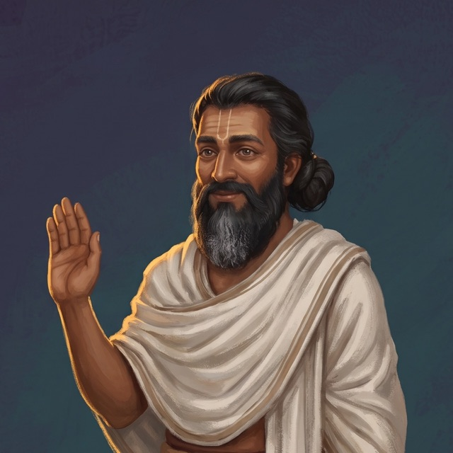
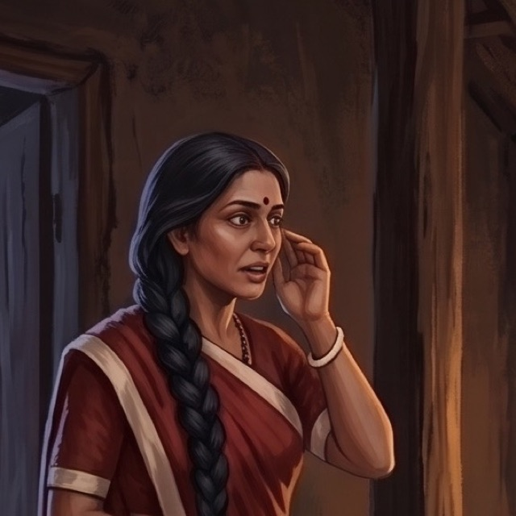

From episode 5
Who is who in the tale of Uttanka?
From episode 5. One line for each person: only the relationships as the tale begins.
The cast





How they are connected
marriedteacher and pupil
Tap a person to see who they are.
The reels
-
5
-
6
-
7
This page opens once you have watched episode 5. Change your number above.